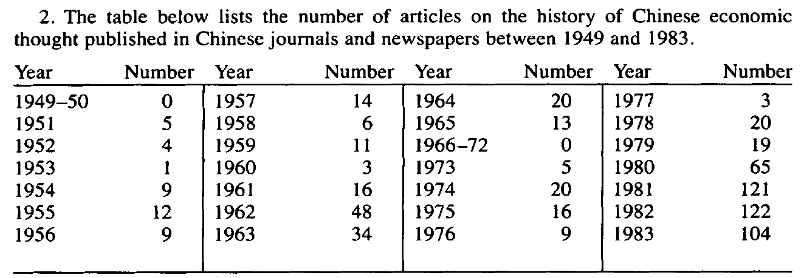
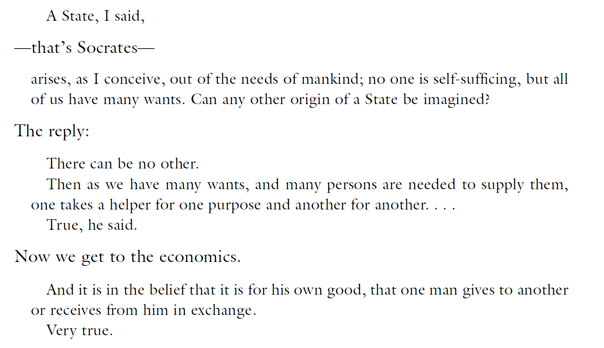
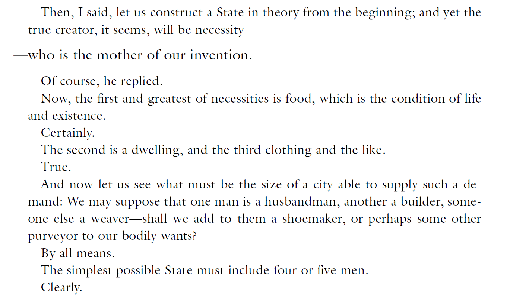
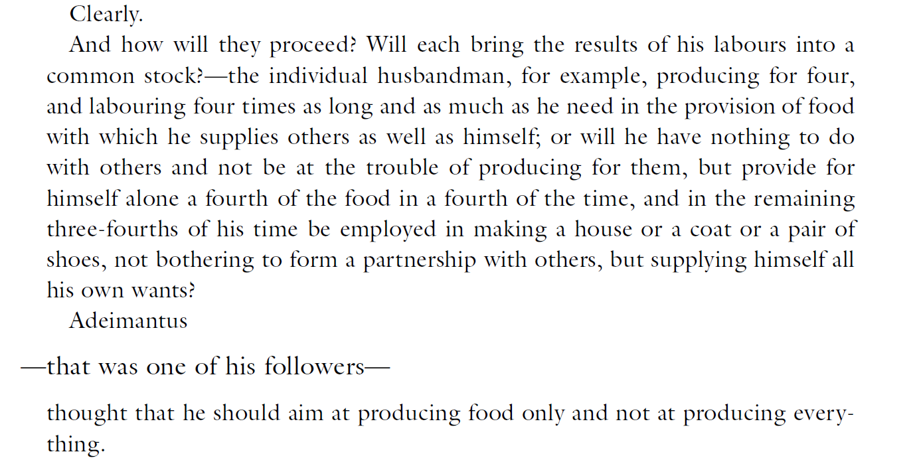
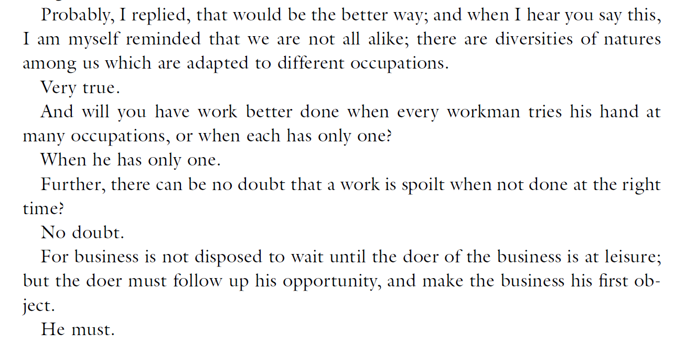
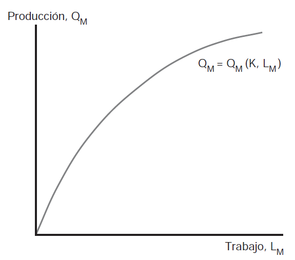
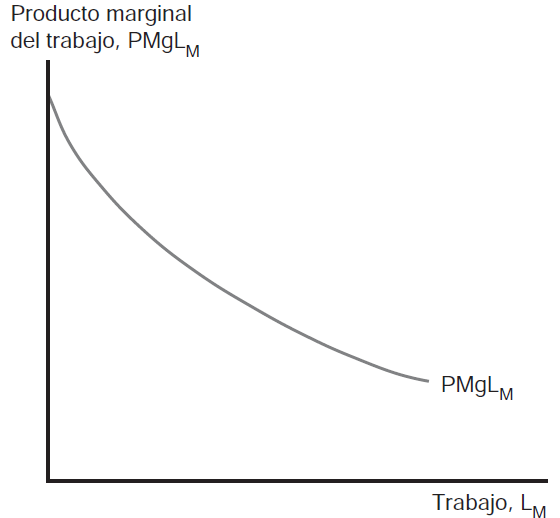

U2. Desde los inicios hasta fines de la Edad Media
Historia del Pensamiento y del Análisis Económico
Características de las ideas antiguas sobre la economía
Riqueza, utilidad y necesidad
“Wealth consists not in having great possesions but in having few wants” [Epictetus]
“The value of money is not in its possesion, but in its use” [Aristotle]
“The wise man seeks balance in all things” [Lao Tzu]
You are here

La actividad económica en el mundo antiguo
- A diferencia de siglos recientes, los pensadores antiguos se preocuparon por las consecuencias de ciertos tipos de actividades conómicas en aspectos como la justicia y la calidad de vida
- Estructura económica esencial de la sociedad prácticamente no cambió hasta fines del siglo XV
- Economía de autosuficiencia \(\longrightarrow\) en su mayoría sin interacciones ni mercados
- Mecanismo de asignación de recursos no era descentralizado sino centralizado –autoridad gobernante
La sociedad primitiva y tribal
- La sociedad griega o incluso aquellas descritas en el Antiguo Testamento poseían algunas características del capitalismo moderno:
- propiedad privada; división del trabajo; mercados; y moneda
- Algunos pensadores de aquella época emitieron juicios que, aunque fragmentarios y esporádicos, reflejan no sólo las preocupaciones de la época sino también las primersa aproximaciones a conceptos económicos
- Preocupaciones por problemas prácticos –aspectos técnicos del proceso de satisfacción de necesidades
- cambios de estación; fertilidad de la tierra; costumbres de los animales
Transición a la sociedad de clases y castas
- Aun en estadíos avanzados de estas sociedades, no se presentaba el problema específico económico-social que requiriera un abordaje analítico y técnico
- la relación esfuerzo-satisfacción de necesidades individuales era intuitiva y palpable a todo hombre ya que no había disociación entre producción y producto
- Eventualmente, las tensiones surgen entre:
- sociedad primitiva \(\longrightarrow\) propiedad comunal y actividad económica basica
- sociedad de clases y castas \(\longrightarrow\) propiedad privada y actividad económica más compleja
- Mucho de esto contenido en el Antiguo Testamento
La monarquía hebrea
- La monarquía hebrea, unida y dividida (1047 a 722 A.C) se desarrolla al calor de la introducción de la propiedad privada y por ende del comercio interior y exterior
- y nace la posibilidad de acumulación (Libro de los Reyes)
- Sociedad con una marcada división entre ricos y pobres, incluso clase esclava
- Alta incidencia de derechos de peaje, impuestos elevados
- se da un empobrecimiento de las masas y aparece por primera vez una clase desposeída
- Profetas condenaban esta división y los excesos de las nuevas clases
- algunos logros \(\longrightarrow\) prohibición de embargar la ropa y utiles de trabajo
El fracaso de los profetas
- Sin embargo visión extremadamente idealista y naive –no entendían los profetas las fuerzas que producían el cambio social
- Pensaban que muchos males no eran consecuencia de la nueva estructuras e instituciones económicas sino que eran atribuibles a un “cambio en el corazón del hombre”
- Sólo se buscaba revertir a una situación pre-existente e idealizada donde se eliminaran todos los vicios que denunciaban
- perdieron total contacto con los problemas sociales de su época –en lingo moderno NO LA VIERON!
Los principales temas
- A modo general, se pueden mencionar 2 (dos) grandes orientadores del pensamiento en este largo período
- No especialización del análisis de la vida social \(\longrightarrow\) no separabilidad de la actividad económica del resto de las actividades (políticas, sociales). Esto fue una constante de autores de diversas extracciones y períodos
- Énfasis en cuestiones filosóficas generales \(\longrightarrow\) motivación detrás del estudio de temas como el comercio y los precios era evaluar la justicia y equidad
- Otro tema era la administración pública pero siempre dentro de un marco ético (normativo)
- No había marco científico
Las ideas económicas en Oriente
Rastros del pensamiento oriental
- Casi no existen referencias al pensamiento económico oriental en principales textos modernos
- Schumpeter básicamente argumentó que no había nada relevante tanto en la tradición oriental como así tampoco entre los griegos y los escolásticos
- Autores posteriores cuestionan esta visión y aportan evidencias de interesantes discusiones en esta tradición
- importante “revival” en interés en China luego de la muerte de Mao
Rastros del pensamiento oriental (cont.)
Rastros del pensamiento oriental
- Las principales escuelas de pensamiento de la China antigua aparecieron entre 550 y 230 AC –las que más se involucraron en temas económicos fueron los confucianistas, los legalistas, y los moistas
- según Schumpeter, sólo los legalistas buscaron respuestas a problemas prácticos y concretos; el confucianismo era primariamente un sistema de valores éticos que rigiera la conducta
- Diferencia entre confucianismo y legalismo \(\longrightarrow\) para el primero la sociedad ideal resulta del deseo de individuos de servir al bien común en lugar de su motivación individual
Guan Zhong [720-645 AC]

Guan Zhong [720-645 AC] (cont.)
- Uno de los primeros filósofos “nombrados”. Fue canciller del Estado de Qi, un importante y pujante estado regional durante la dinastía Zhou.
- A diferencia de Confucio, se lo considera uno de los padres de la tradición legalista
- considerado como un innovador y precursor en pensamiento filosófico y político
Guan Zhong [720-645 AC] (cont.)
- Anticipó en sus escritos la teoría de la oferta y la demanda
- principios y discusiones presentes en el Guanzi (también conocido como Kuan-tzu) uno de los textos más importantes de los textos antiguos Chinos
- Guanzi contiene contribuciones de muchos autores anónimos, principalmente funcionarios y asesores
- Precursor temprano de la teoría cuantitativa del dinero
- Discutió y se preocupó por la política fiscal contractíclica
- Comprendió y valoró el funcionamiento del mecanismo de mercado
Guan Zhong [720-645 AC] (cont.)
Qing 轻 means “light” and by extension “unimportant,” “inconsequential,” or “cheap.” As a verb, it means to accord little or no value to something. Zhong 重 means “heavy,” and by extension “important”, “serious” or “expensive”. As a verb, it means to value something. As a compound the two characters usually mean “weight”.
- Desde la perspectiva del qingzhong todos los fenómenos económicos deben ser entendidos relacionalmente; las cosas pueden ser pesadas o ligeras sólo en relación a otras cosas
- Idea central \(\longrightarrow\) valor de todos los bienes es relativo
Guan Zhong [720-645 AC] (cont.)
- Los bienes pesados son considerados esenciales para la producción o el bienestar humano y los bienes ligeros son vistos como no esenciales
- importante \(\longrightarrow\) el cáracter de pesado o ligero está sujeto a constante cambio y es producto de varias cosas (época del año, prácticas productivas, dinámica de mercado)
- El rol de la política económica, según el Guanzi debía ser el de “pesar y balancear”, usar lo que es pesado para compensar lo que es ligero
Guan Zhong [720-645 AC] (cont.)
“When things are plentiful, they will be cheap; when they are scarce, they will be expensive”
- Precedente de idea que el precio de un bien está determinado por su escasez
“Goods if concentrated will become”heavy”, but will turn “light” once they are scattered about”
- Refiere a la estructura institucional de un “mercado” \(\longrightarrow\) no sólo la escasez importaba para el precio, también la distribución de estos bienes entre productores
Guan Zhong [720-645 AC] (cont.)
“Goods worth being hoarded will become”heavy”, and conversely [if not worth hoarding] will become “light”. Goods cornered will be “heavy”, or otherwise will be “light”
- Demanda influía sobre su precio –además demanda como depósito de valor. Si un bien “se guarda bajo llave”, entonces tenderá a subir su precio
“An urgent decree to collect tax in the form of certain goods will make the goods in question”heavy”, but a go-slow decree will make them “light”
- La imposición afectaría el precio: relevancia del tiempo \(\longrightarrow\) si \(T\) inmediato, impacta en precio directamente; si \(T\) gradual, impacto no directo [idea de shock de demanda]
Guan Zhong [720-645 AC] (cont.)
- En la sociedad agrícola de aquel tiempo, la subsistencia dependía de los granos –el bien más fundamental en el Guanzi
“A man can’t eat without grain, grain can’t grow without land, land cant’ do without man, and man can’t get rich without labor”
- Los granos son una especie de numeraire en el sistema de economía-política del qingzhong ya que determinaban el precio del resto de los bienes –y del dinero también
Guan Zhong [720-645 AC] (cont.)
“The price of commodities will rise or fall along with the value of money, and it is grain alone that will determine whether they are expensive or cheap. …When grain is expensive, all other things are cheap, when grain is cheap, all other things are expensive
- Sugieren que el valor del dinero se mueve en dirección opuesta –el precio del grano afecta el nivel general de precios (impacta en toda la sociedad) pero afecta diferencialmente a población urbana y rural
Guan Zhong [720-645 AC] (cont.)
- El gobierno debía comprar bienes cuando eran ligeros y venderos cuando eran pesados de manera de suavizar fluctuaciones \(\longrightarrow\) idea de política fiscal contracíclica
- Indicios de funcionamiento (descentralizado) del mercado
“[a]s the harvest is bad or good, grain will be expensive or cheap. …if the prince is not able to control the situation, it will lead to large-scale traders roaming the markets and taking advantage of the people’s lack of things to increase their capital a hundredfold”
“it is the nature of men that whenever they see profit, they cannot help chasing after it”
Otros pensadores orientales
- Lao-tzu [6to siglo AC] \(\longrightarrow\) uno de los Taoístas principales
- proponían ningún tipo de intervención o interferencia del gobierno en los asuntos económicos y sociales
- gobieron mínimo y en consecuencia impuestos bajos
- Chuang-tzu [369-286 AC]
“a petty thief is put in jail. A great brigand becomes a ruler of State”
- tempranas encarnaciones del libertarianismo en Oriente
El pensamiento griego
Temas y preocupaciones centrales
- Visión antropocéntrica y administrativa –economía y administración del hogar
- Prevalencia de consideraciones morales y éticas
- El intercambio como mecanismo aislado: economía básica y simple
- Algunas ideas sobre división y especialización del trabajo, cálculo de utilidad e interés
Hesíodo [circa 700 AC]
- La obra de ambos se conoce a través de transmisión oral durante el siglo VIII AC
- Hesíodo argumenta que la escasez no se debe a recursos ilimitados/deseos ilimitados sino…que es uno de los males que salieron de la caja de Pandora!
- Era agricultor y su principal preocupación era la eficiencia
Jenofonte [430-354 AC]
Jenofonte [430-354 AC] (cont.)
- Fue filósofo, soldado, historiador y escritor. En su filosofía moral, se encuentran vestigios de utilitarianismo (“mejores acciones son las más beneficiosas para todos”) e igualitarismo (“esposas y esposos deberían ser co-trabajadores en el hogar”)
The woman conceives and bears her burden in travail, risking her life, and giving of her own food; and, with much labor, having endured to the end and brought forth her child, she rears and cares for it, although she has not received any good thing, and the babe neither recognizes its benefactress nor can make its wants known to her; still she guesses what is good for it, and what it likes, and seeks to supply these things, and rears it for a long season, enduring toil day and night, nothing knowing what return she will get.
Jenofonte [430-354 AC] (cont.)
- Usó el término economía para su obra principal, Oeconomicus pero sin la acepción moderna
- Centró sus ideas en el individuo decisor-administrador
- Pragmático \(\longrightarrow\) un buen administrador es aquel que incrementa el tamaño del excedente
- La división de las tareas del hogar es clave para él –límite: extensión del mercado
- Presagió el concepto de utilidad marginal decreciente
- Concepción subjetiva de la utilidad \(\longrightarrow\) lo bueno y lo malo en relación a los propósitos que cumplen
Platón: El Estado absoluto [428-348 AC]
- Su obra principal en la temática es La República [“el alegato más elocuente en favor de una cierta clase de comunismo jamás escrito” Robbins (2000)]
- En ella describe a su Estado ideal: Platón creía que debía ser rígido y estático \(\longrightarrow\) todo cambio es regresivo [Platón odiaba la democracia, ejemplo de esto era que alababa a Esparta y no a Atenas]
- Es sin embargo el primer pensador occidental que menciona explícitamente el principio de la división del trabajo
Platón: El Estado absoluto [428-348 AC] (cont.)
Platón: El Estado absoluto [428-348 AC] (cont.)
Platón: El Estado absoluto [428-348 AC] (cont.)
Platón: El Estado absoluto [428-348 AC] (cont.)
Platón: El Estado absoluto [428-348 AC] (cont.)
Platón: El Estado absoluto [428-348 AC] (cont.)
- Argumenta que el fundamento económico de la ciudad es la especialización
- La ciudad ideal no puede existir sin el fundamento de una economía ideal
- Proponía que los bienes fueran de propiedad conjunta, todo pertenece a todos en esa ciudad ideal
- Sociedad divida en: 1) soldados/guardias, 2) productores, 3) líderes
- Importante \(\longrightarrow\) las diferencias para Platón son originarias no adquiridas (a través de la educación por ejemplo como lo serían para Adam Smith)
- Sociedad divida en: 1) soldados/guardias, 2) productores, 3) líderes
Protágoras [480-411 AC] y el cálculo hedonístico
- Si Platón era un absolutista, Protágoras fue un relativista –no existe ninguna verdad objetiva sino sólo opiniones subjetivas.
- Todo está condicionado por el contexto, por el tiempo y lugar
El hombre es la medida de todas las cosas
- Defendió la importancia de apelar a las emociones en lugar de utilizar sólo la razón y la lógica
- A diferencia de Platón, favorecía la democracia
Protágoras [480-411 AC] y el cálculo hedonístico
- Algunos autores afirman que la idea del hombre-medida de Protágoras es un antecedente de la teoría del valor trabajo y del invidualismo subjetivo
- Anticipó dos de los elementos más básicos de la teoría económica moderna:
- el rol del mercado como asignador de recursos para maximizar utilidad
- el uso de la medición hedonística en la evaluación de la elección
Aristóteles: El Filósofo [384-322 AC]
- Discípulo de Platón. Como buen discípulo frecuentemente entró en desacuerdos filosóficos con su mentor –Platón es mi amigo, pero más amiga es la verdad
- Más influyente que Platón en temas filosóficos y otras areas –el pensamiento político y moral aristotélico fue dominante hasta los siglos 16 y 17
- Dos grandes obras, entre muchas, fueron Etica y Política
- Difirió con Platón en relación a la institución de la propiedad privada
- Al igual que otros griegos, asoció economía con la administración del hogar
Aristóteles: El Filósofo [384-322 AC] (cont.)
- Consideraciones sobre valor y dinero
- Condiciones primitivas \(\longrightarrow\) trueque no necesita dinero
- Eventualmente \(\longrightarrow\) se produce intercambio indirecto –mediado por algo que sirva como dinero
- Está hablando indirectamente del surgimiento del comercio e intercambio
Aristóteles: El Filósofo [384-322 AC] (cont.)
Por tanto, es evidente que hay un arte de adquisición natural para los que administran la casa y la ciudad. …Existe otra clase de arte adquisitivo, que precisamente llaman -y está justificado que así lo hagan- crematística, para el cual parece que no existe límite alguno de riqueza y propiedad. Muchos consideran que existe uno solo, y el mismo que el ya mencionado a causa de su afinidad con él. Sin embargo, no es idéntico al dicho ni está lejos de él. Uno es por naturaleza y el otro no, sino que resulta más bien de una cierta experiencia y técnica [Aristóteles, Política. Libro I, pp. 68]
Aristóteles: El Filósofo [384-322 AC] (cont.)
Ambos usos son del mismo objeto, pero no de la misma manera; uno es propio del objeto, y el otro no. Por ejemplo, el uso de un zapato: como calzado y como objeto de cambio. Y ambos son utilizaciones del zapato. De hecho, el que cambia un zapato al que lo necesita por dinero o por alimento, utiliza el zapato en cuanto zapato, pero no según su propio uso, pues no se ha hecho para el cambio. Del mismo modo ocurre también con las demás posesiones, pues el cambio puede aplicarse a todas, teniendo su origen, en un principio, en un hecho natural: en que los hombres tienen unos más y otros menos de lo necesario. De ahí que es evidente también que el comercio de compra y venta no forma parte de la crematística por naturaleza, pues entonces sería necesario que el cambio se hiciera para satisfacer lo suficiente. [Aristóteles, Política. Libro I, pp. 68]
Aristóteles: El Filósofo [384-322 AC] (cont.)
- Se interesó por la cuestión de la justicia distributiva y el rol del Estado
- En este sentido, concibió al intercambio como un proceso bilateral que genera ganancias para ambas partes
- igualdad proporcionada y reciprocidad
- Sento un precedente para las bases del análisis de oferta, demanda y precio de equilibrio
Aristóteles: El Filósofo [384-322 AC] (cont.)
Aristóteles: El Filósofo [384-322 AC] (cont.)

Aristóteles: El Filósofo [384-322 AC] (cont.)
- Algunas de las proposiciones establecidas (al menos implícitamente) por Aristóteles fueron
- Hay comercio cuando hay un excedente
- El valor asignado al excedente difiere entre los individuos
- Los individuos reconocen ventajas mutuas del intercambio
- Autoridad administrativa necesaria para solucionar disputas
- Consideró la escasez y el valor de uso hasta cierto punto
- Pero no concibió un mercado autorregulado y descentralizado
Aristóteles: El Filósofo [384-322 AC] (cont.)
- Tuvo aportes sobre dinero e interés
- Concibió al dinero como: 1) patrón de valor, 2) medio de cambio y 3) depósito de valor
- Diferenció entre intercambio necesario (natural; actividad doméstica) e intercambio innecesario (no natural; actividad comercial)
- Acumulación de riqueza via intercambio comercial era reprobada… –ejemplo: acumulación y préstamos eran no naturales, equiparó el interés a la usuara
- Entendió las funciones del dinero pero no el rol del interés
Aportaciones de los romanos
- Gran contribución del imperio romano no económica \(\longrightarrow\) el derecho
- El ius gentium suministro marco legal para la actividad económica contemporánea y posterior
- Pensamiento cristiano primitivo se centró en el recto uso de bienes materiales
- Autores cristianos fueron indiferencia respecto del análisis positivo
- Llamativa ausencia y escasez de pensamiento económico durante la Roma Republicana e Imperial y también durante la Cristiandad
Pensamiento económico medieval
La decadencia secular de Occidente
- Occidente entra en la denominada Edad Oscura luego de la caída del último emperador romano [476 hasta siglos XII-XIII]
- contrapartida \(\longrightarrow\) auge y desarrollo del Islam y Oriente en ciencia e innovaciones [numeración arábica]
- Pero más importante aún \(\longrightarrow\) reintroducción de Aristóteles en Occidente
- Traducción de los textos y reintroducción de ideas de los griegos en período 1000-1500
Sistema de organización feudal
- Feudalismo esencialmente un sistema de producción y distribución compuesto por el monarca, los señores y los siervos
- Propiedad=usufructuo. El feudo se convirtió en sede del poder político
- Actividad básica de autosuficiencia: comercio era o bien limitado o prohibido
- Mercado como fenómeno de la vida diaria \(\longrightarrow\) de a poco a actividad económica se iba concentrando en centros comerciales
Las preocupaciones de la escolástica
- Se produce un cambio en las principales motivaciones de los filósofos morales de la época
- se concentraron básicamente en las obligaciones del individuo \(\longrightarrow\) ¿qué debería hacer el hombre Cristiano? [note que se estaba recién produciendo la transición a los Estados modernos]
“We next have to consider the sins which have to do with voluntary exchanges…” [Aquinas, Summa Theologica (1948)]
El método escolástico
- La tradición escolástica contribuye a preservar y desarrollar las ideas aristotélicas
- El metódo escolástico consistía básicamente en \(\longrightarrow\) se formulaba un tema y se detallaban las opiniones a ser reevaluadas. Se examinaban y ponderaban las opiniones contrarias y se producía un documento. Basado en la fe y peso de autoridad
- El principal interés de la clerecía era la justicia –no el intercambio.
- Los teóricos de la escolástica no escribieron ni se refieron centralmente a los temas económicos –solo aparecieron incidentalmente cuando había algún tema de justicia involucrado
La principal preocupación: el precio justo
- El centro de gravedad de la discusión sobre el valor y el intercambio en los teólogos del medioevo era el justo precio
- ¿Qué es y cómo se interpreta el justo precio?
- El justo precio era un precio que, tomando en cuenta la cantidad de trabajo incorporada, permitía mantener un status en un sistema de jerarquía
- La industria debía organizarse en base gremios mercantiles –asociaciones de productores y consumidores que velaban para que se cobrara el justo precio
La evaluación schumpeteriana de la escolástica
- Algunos autores rescatan las figuras de San Bernardino de Siena y San Antonino de Florencia [de Roover (1967)]
- idea de que la doctrina del precio justo deriva de una declaración de un tal Heinrich von Langenstein [una figura menor aunque ciertamente oscura y polémica en la tradición escolástica]
- “si las autoridades no fijan el precio, entonces el productor no debería cobrar no más que lo que le permitiría mantener su status en la jerarquía”
- idea de que la doctrina del precio justo deriva de una declaración de un tal Heinrich von Langenstein [una figura menor aunque ciertamente oscura y polémica en la tradición escolástica]
- Para von Langenstein la intervención y regulación de precios sería más efectiva que la determinación del justo precio en forma descentralizada
Los escolásticos principales: Santo Tomás
- La principal y más importante figura del movimiento escolástico fue Santo Tomás de Aquino
- Sus discusiones sobre “los pecados” en torno a los intercambios voluntarios no son muy coherentes y además rodeados de cierta imprecisión conceptual –no se sabe si refiere al intercambio aislado o al intercambio orgnaizado similar al de un mercado
Santo Tomás y el justo precio
- Referencia a San Agustín alabando el comportamiento de alguien que a quien ofrecen un libro a un precio debajo del que presumiblemente se podría haber obtenido y que se rehusa a pagar ese precio y ofrece uno más alto
- Pero en general los autores estudiosos de los escolásticos coinciden en que cuando Santo Tomás se refiere al intercambio organizado (no aislado), el justo precio para él es una estimación del precio pagado en un mercado relativamente competitivo
Santo Tomás y el justo precio (cont.)
- Argumenta que no es “un pecado” vender al precio vigente aún a sabiendas que hay más vendedores potenciales entrando al mercado (y que bajarán el precio) –pero encuentra virtuoso el hecho de comunicar esta información
- Santo Tomás parece formular una teoría de la demanda basada en las necesidad humanas (indigentia) y en principios morales
Santo Tomás y el justo precio (cont.)
- Reafirma la doble medida de los bienes: valor de uso y valor de cambio
- Introduce la necesidad en la fórmula del precio: *el precio varía con la necesidad
- El regulador del valor es la indigentia –en cierto modo precursor temprano de la teoría de la utilidad marginal
- Introdujo la idea de que el resultado del mercado no necesariamente es justo: justo precio (normativo) como opuesto al precio de mercado (positivo)
San Bernardino de Siena
- A diferencia de Santo Tomás (y Aristóteles), San Bernardino encuentra de utilidad el comercio y la industria. Pero critica fuertemente las trampas y la competencia desleal a veces usadas por mercaderes
- Sigue a Aristóteles (en oposición a Platón) sobre la propiedad privada \(\longrightarrow\) como la mejor forma de ser usada y aprovechada, en comparación con propiedad comunal
San Bernardino de Siena (cont.)
- Santo Tomás contrastó el valor de los ratones (vivos) y perlas (muertas) pero no formuló de manera explícita teoría alguna sobre valor de las cosas
- San Bernardino, en cambio, ofreció 3 (tres) elementos que determinaban el valor:
- la utilidad intrínseca del objeto
- la escasez del objeto
- la deseabilidad del objeto
- Note \(\longrightarrow\) en términos de la teoría de valor moderna, la distinción entre 1 y 2 no tiene ninguna relevancia
San Bernardino de Siena (cont.)
El cruel destino de Pierre Olivi. Casi un siglo antes que San Bernardino, un religioso francés y franciscano se había anticipado a San Bernardino casi por completo en temas de valor y utilidad. Cuenta la leyenda que San Bernardino omitió citar el trabajo de Olivi no por despistado sino por remordimiento: Olivi fue declarado hereje y sus huesos fueron desenterrados y esparcidos a los cuatro vientos.
San Bernardino de Siena (cont.)
- La utilidad intrínseca no es un factor absoluto –“de otra manera, un vaso de agua sería prácticamente impagable…pero es abundante” [paradoja del valor]
- El precio se determina por estimación colectiva \(\longrightarrow\) no es otra cosa que valuación de mercado
- Condena en toda ocasión las prácticas monopólicas
- Sobre salarios \(\longrightarrow\) aplican las mismas reglas que para los precios
El tema del interés y la usura
- Existió un acuerdo casi total entre los escolásticos y sobre todo los tardíos en la condena (aristotélica) de la usura
- La discusión está presente en la Pregunta 78 de la Summa Theologica bajo el nombre “Of the Sin of Usuary Which Is Committed in Loans”
- La oposición era no a la ganancia de las sociedades
- La oposición era inflexible a cobrar interés sobre el dinero dado como préstamo
El tema del interés y la usura (cont.)
(In proof of this,) it should be noted that there are some things the use of which is the consumption of the things themselves; as we consume wine by using it to drink and consume wheat by using it for food. Hence, in case of such things, the use should not be reckoned apart from the thing itself; but when the use has been granted to a man, the thing is granted by this very fact; and therefore, in such cases, the act of lending involves the transfer of ownership (dominum). Therefore, if a man wished to sell wine and the use of the wine separately, he would be selling the same thing twice, or selling what does not exist; hence he would obviously be guilty of a sin of injustice. For analogous reasons, a man commits injustice who lend wine or wheat expecting to receive two compensations.
El tema del interés y la usura (cont.)
There are some things, however, the use of which is not the consumption of the thing itself; thus the use of a house is living in it, not destroying it. Hence, in such cases, both may be granted separately, as in the case of a man who transfers the ownership of a house to another, reserving the use of it for himself for a time; or, conversely, when a man grants someone the use of a house, while retaining the ownership. Therefore a man may lawfully receive a price for the use of a house, and in addition expect to receive back the house lent.
El tema del interés y la usura (cont.)
- Increíblemente \(\longrightarrow\) el propio filósofo se refuta a si mismo en el párrafo siguiente!
- Si uno paga por el vino inmediatamente cuando se bebe, entonces no se paga interés, sólo se paga el precio del vino
- Pero si se bebe el vino y uno no paga por un año, la situación es la misma que la de un hombre que acepta una casa en préstamo por un año y no paga alquiler sino hasta el final del año!
- Había sólo una excepción cuando se toleraba \(\longrightarrow\) damnum emergens / lucrum cessans
- Hacia el siglo XIV y XV, dado el gran desarrollo de negocios y actividad mercantil, empieza a relajarse esta oposición a la usura
El tema del interés y la usura (cont.)
- La Iglesia condenó la usura y durante la Edad Media hubo una prohibición absoluta. Las leyes contra la usura eran respaldadas por los gobiernos
- Sin embargo, ciertas formas de actividad comercial y societaria gozaban de formas legítimas del cobro de intereses. La doctrina entró pues en conflicto con la práctica
- La condena de la usura por parte de la Iglesia puede haber respondido a motivos egoístas, de modo de mantener su posición social de monopolio y abaratar así el costo de sus fondos.
Otros escolásticos: Enrique de Frimaria [1245-1340]
- Concibe a la indigentia como una medida agregada de “demanda frente a escasez”. Extendió el análisis tomista en favor de la demanda agregada \(\longrightarrow\) necesidad común de algo que es escaso
- La indigentia no elevaría el precio siempre y cuando hubiera abundancia
- Principal problema subsistía \(\longrightarrow\) los seguidores de la tradición aristotélica no lograron separar la demanda y la oferta como elementos en la fórmula del valor
Otros escolásticos: Jean Buridan [1300-1358]
- Acercó los conceptos de indigentia con el de demanda efectiva
- Distinguió entre necesidad individual y necesidad agregada; relacionó el valor a esta última. La conjunción de un número de consumidores contribuye a la formación de un precio justo de mercado (y normal)
- Transforma el concepto de necesidad por uno más amplio de deseo. Sienta las bases de la teoría de utilidad del siglo XIX
Otros escolásticos: Odonis y Crell
- Tradición escolástica se acercó bastante a lo que se conoce como la síntesis neoclásica aunque falló en reconocerla y proponerla explícitamente
- Odonis desarrolló una teoría del trabajo sobre diferencias de habilidades
- Crell logró incoporar estas ideas y agregó las de Buridan sobre demanda efectiva
- Sin embargo el problema de la determinación del valor no se resolvería hasta s. XIX
- Dos principios legados:
- trabajo como regulador del valor, si se gasta en algo útil
- todo trabajo siempre es escaso